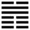

Trạch Địa Tụy (萃 cuì)
Gặp nhau rồi thì thành bầy, thành bầy thi phải nhóm họp, cho nên sau quẻ Cấu tới quẻ Tụy (nhóm họp)
Thoán từ:
萃 : 亨, 王假有廟．利見大人．亨, 利貞．用大牲, 吉, 利有攸往．
Tụy: hanh, vương cách hữu miếu. Lợi kiến đại nhân,
Hanh, lợi trinh. Dụng đại sinh, cát, lợi hữu du vãng.
Dịch: Nhóm họp: hanh thông. Vua đến nhà Thái miếu, ra mắt kẻ đại nhân thì lợi, hanh thông, giữ vững đạo chính thì lợi. Lễ vật (để cúng) lớn (hậu hĩ) thì tốt, tiến đi (sự nghiệp) được lâu dài.
Giảng: chằm (Đoài ở trên đất (Khôn), là nước có chỗ nhóm, tụ, cho nên gọi là quẻ Tụy.
Nội quái là Khôn có tính thuận, ngoại quái là Đoài có nghĩa vui vẻ, hoà thuận; mà hào 5 ở trên được hào 2 ở dưới ứng trợ cho, tất nhóm họp được đông người, cho nên hanh thông, tốt.
Nhóm họp cần long trọng và tỏ lòng chí thành, có thần linh chứng giám, cho nên vua tới nhà Thái miếu để dâng lễ, thề.
Người đứng ra nhóm họp một đảng phải là bậc đại nhân có tài, đức, được người tin, trọng thì mới tốt; người đó phải giữ vững đạo chính, đường lối chính đáng thì mới tốt (lợi trinh).
Nhóm họp ở thái miếu thì tế lễ phải long trọng, những con vật để cúng phải lớn, thì mới tốt. Nhóm họp để cùng nhau mưu tính mọi việc cho sự nghiệp được lâu dài (lợi hữu du vãng).
Đại Tượng truyện khuyên khi nhóp họp nên có tinh thần hoà thuận vui vẻ như quẻ Khôn, quẻ Đoài, cất khí giới đi để ngừa những sự biến bất ngờ xảy ra.
Ý nghĩa các hào :
1.
初六: 有孚, 不終, 乃亂乃萃．若號, 一握為笑勿恤, 往, 无咎．
Sơ lục: hữu phu, bất chung, mãi loạn nãi tụy;
Nhược hào, nhất ác vi tiếu vật tuất, vãng, vô cữu.
Dịch: Hào 1, âm: có người tin mình mà mình không thể đến cùng, rồi làm rối loạn nhóm của mình; nên biết lầm mà kêu gọi người tin mình kia, dù có bị một bầy (tiểu nhân) cười cũng mặc, cứ theo lên (vãng) với người tin mình, thì không có lỗi.
Giảng: Hào 1 này có chính là hào 4 dương cương, tức là có bạn tin mình, nhưng 1 âm nhu, giữ đạo chính không được vững (không theo 4 đến cùng) mà nhập bọn với 2, 3 đều là âm nhu tiểu nhân, làm rối loạn nhóm của mình. Nếu có biết như là lầm mà kêu gọi 5, theo 4, dù có bị 2, 3 cười cũng mặc, thì sẽ không có lỗi.
2.
六二: 引, 吉, 无咎, 孚, 乃利用禴
Lục nhị: Dẫn, cát, vô cữu, phu, nãi lợi dụng thược.
Dịch hào 2, âm: dẫn bên lên nhóm với hào 5 thì tốt, không có lỗi, phải chí thành, chí thành thì như trong việc tế lễ, dùng lễ mọn cũng tốt.
Giảng: Hào này âm nhu nhưng trung chính, ứng với hào 5 dương cương trung chính ở trên, là một nhóm rất tốt. Nhưng vì nó xen vài giữa hai hào âm 1 và 3, mà cách xa hào 5, nên Hào từ khuyên nó kéo hai hào âm đó lên nhóm họp với 5, thì tốt, không có lỗi, và nhớ phải chí thành (phu) mới được, chí thành thì như trong việc cúng tế, dùng lễ mọn (thược) cũng tốt).
3.
六三: 萃如, 嗟如, 无攸利, 往, 无咎, 小吝．
Lục tam: Tụy như, ta như, vô du lợi, vãng, vô cữu, tiểu lận.
Dịch: Hào 3, âm: Muốn họp mà không được nên than thở, chẳng có gì tốt cả; tiến lên mà họp với hào thượng, tuy hơi bất mãn đấy, nhưng không có lỗi.
Giảng: Hào 3 này âm nhu, ứng với hào trên cùng, nhưng không thích (vì hào này cũng âm nhu), muốn họp với 4 và 5 là dương kia, nhưng 4 có bạn là 1, 5 có bạn là 2 rồi, chê 3 là bất trung,bất chính không thèm; 3 nhìn xuống dưới, muốn họp với 2,1 cũng không được vì họ có bạn là 5, 4 rồi; vì vậy 3 than thở, chẳng có gì tốt cả. Ðành phải tiến lên mà họp với hào trên cùng vậy, bất như ý đấy, nhưng không có lỗi.
4.
九四: 大吉, 无咎．
Cửu tứ: đại cát, vô cữu.
Dịch: Hào 4, dương: nếu được rất tốt thì mới không có lỗi.
Giảng: Hào này dương cương, tốt, chỉ hiềm bất chính; nó thân với hào 5, dương cương ở trên, mà lại gần với một bầy âm nhu ở dưới tình thế khó khăn, phải làm sao thuyết phục được bầy âm theo 5, như vậy mới khỏi có lỗi.
5.
九五: 萃有位, 无咎, 匪孚元永貞, 悔亡．
Cửu ngũ: tụy hữu vị, vô cữu, phi phu nguyên vĩnh trinh, hối vong.
Dịch: Hào 5, dương: Nhờ có vị cao mà nhóm họp được người, không có lỗi, nếu người chưa tin mình thì phải giữ tư cách nguyên thủ, giữ người được lâu, giữ đạo chính được bền, như vậy mới không hối hận.
Giảng: Bốn hào âm trong quẻ này đều muốn họp với hai hào dương, mà trong hai hào dương này, hào 5 có địa vị cao nhất, đức lại thịnh hơn hào 4, đủ cả trung, chính, cho nên các hào âm đều hướng vào (tụy hữu vị), tốt, không có lỗi. Nhưng còn e có người vẫn chưa tin hẳn 5 (phỉ nhu); muốn cho mọi người tin thì phải làm sao xứng đáng là vị nguyên thủ (nguyên), giữ người được lâu (vĩnh) giữ đạo chính (trinh) được bền, như vậy sẽ không hối hận.
6.
上六 : 齎咨, 涕洟, 无咎．
Thượng lục: tế tư, thế di, vô cữu.
Dịch: Hào trên cùng, âm: Than thở, sụt sùi, không trách lỗi ai được.
Giảng: Hào này âm nhu, kém tư cách, lại ở cuối thời nhóm họp (tụy) muốn họp với ai cũng không được, tới nỗi than thở, sụt sùi, cứ an phận thì không có lỗi. Phan Bội Châu hiểu “vô cữu” là không trách lỗi ai được, cũng như hào trên cùng quẻ Cấu ở trên.
*
Đại ý quẻ này là muốn họp người, lập một đảng chẳng hạn thì phải là bậc đại nhân: có địa vị cao, có tài, có đức, phải có lòng chí thành, một chủ trương chính đáng.